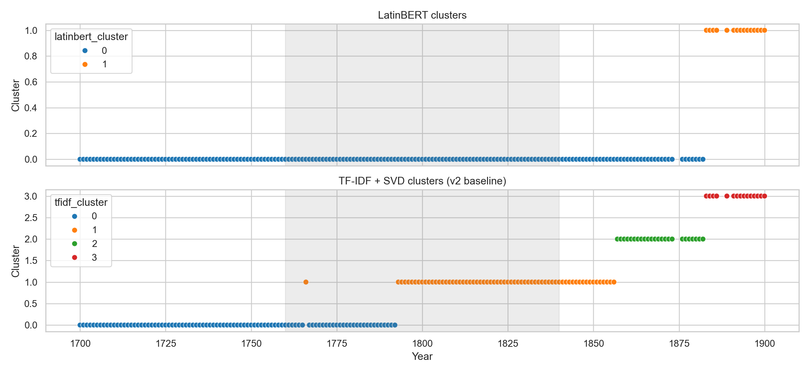
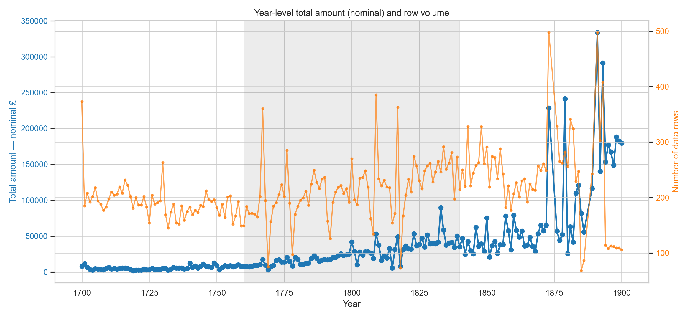
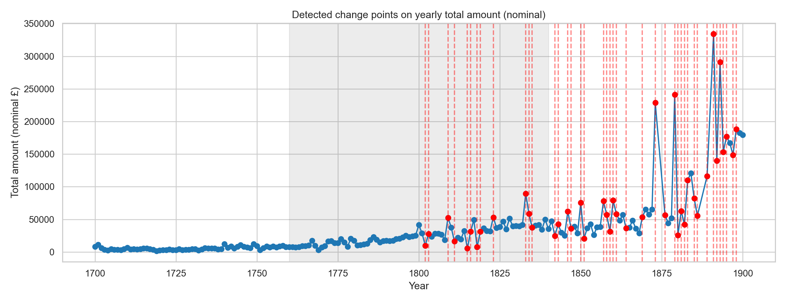
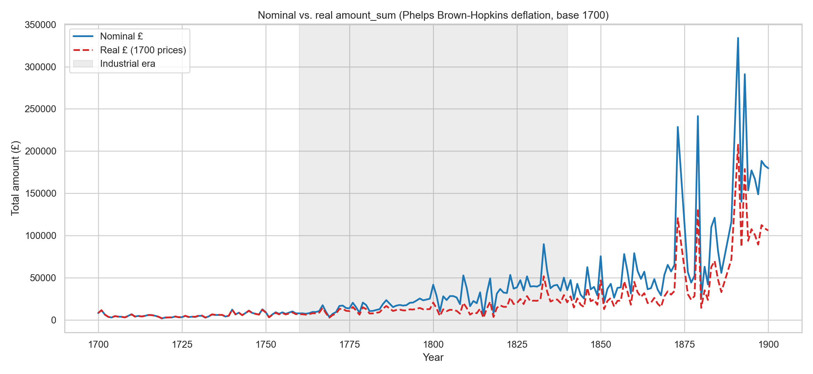
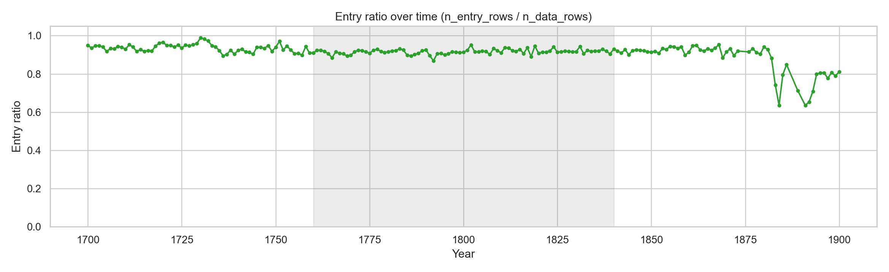

Author: Jungwoo Hong
Focus: detailed change report relative to the earlier baseline analysis in ledger_clean
This report follows the same narrative style as the earlier baseline report, but adds deeper methodological detail, stronger economic interpretation, and explicit model-comparison evidence. It documents a newly discovered double-counting issue in the 1880–1900 period and its fix, the completed LLM enrichment pipeline, and the concrete plan for how enriched outputs will be used in the next analysis pass.
March 24 update comparison-focused double-counting fixed enrichment complete (128 pages)| Metric | v1 (ledger_clean) | v2 (ledger_clean_v2) | Change |
|---|---|---|---|
| Years covered | 196 | 196 | Same coverage |
| Data rows (entry + total) | 49,187 | 49,187 | Same base corpus |
| Header rows | 6,516 | 6,516 | Same base corpus |
| Main objective | Baseline exploratory trends | Bias-reduced, more interpretable trends | Methodological upgrade |
Late-era ledger pages (roughly 1880–1900) switched to a double-entry accounting layout: both the income (debit) and expenditure (credit) columns appear side-by-side on the same physical page. When the AI extraction model reads such a page, it transcribes all rows — income entries and expenditure entries — into a single list. Naively summing all row amounts therefore double-counts: the total reflects both what came in and what went out, inflating the apparent scale of activity by roughly 2×.
side field
on each row — "left" for the income column, "right" for the expenditure
column, or absent for earlier single-column pages. For 1880–1900 years we found up to 100% of rows
labelled with a side, confirming the switch to double-entry format.
side = "left" or side = "right",
its amount contribution is multiplied by 0.5 before aggregation. This is equivalent to treating the
page total as the average of the two sides (which should be equal in a balanced ledger), eliminating
the double-count.
| Comparison | Before fix (v1 amounts) | After fix (v2 amounts) | Effect |
|---|---|---|---|
| Nominal ratio (post_1840 / pre_1760) | 18.9× | 14.9× | Late-era peak substantially reduced |
| Real ratio (inflation-adjusted) | 11.4× | 8.9× | Same direction; reduced after fix |
| 1891 amount_sum (nominal) | ~860,000 implied by prior delta | 334,039 | ~60% reduction — consistent with ~99% of rows being double-entry |
The peak in 1880–1900 is still real: the college genuinely expanded in this period. But a substantial part of the apparent spike was a measurement artefact of the new page layout. After the fix the growth trend is materially more interpretable.
Nominal amounts are deflated using the Phelps Brown-Hopkins historical price index (1700=100), producing real (constant-price) trajectories. This is critical because late-era nominal values can overstate genuine expansion when price levels surge.
The index is sourced from Phelps Brown & Hopkins (1956), "Seven Centuries of the Prices of Consumables, Compared with Builders' Wage-rates." Decade anchors are linearly interpolated to yearly values. The Napoleonic era (c. 1810) is the sharpest spike — index reaches 269, meaning £1 in 1810 bought only about 37% of what £1 bought in 1700.
| Era | Mean amount_sum (nominal £) | Mean amount_sum (real, 1700 £) |
|---|---|---|
| pre_1760 | 5,673 | 5,540 |
| industrial_1760_1840 | 25,269 | 14,094 |
| post_1840 | 84,546 | 49,304 |
This run removes broader boilerplate categories (time templates, accounting format words,
currency units, and generic abbreviations) and applies stricter token constraints.
The extended stop-word list adds 36 ledger-specific words on top of scikit-learn's English
stop words, including: year years yr yrs (time templates),
total balance carried forward account paid payment sum amounts (accounting format),
pound shilling pence sterling (currency units), and
ob viz ie per (generic abbreviations with no economic meaning).
A token pattern [a-z][a-z]+ also eliminates pure-digit tokens.
Result: top terms and emerging terms are substantially less contaminated by bookkeeping formula text.
This run adds structure-sensitive metrics that were not explicit in the baseline:
entry_ratio (n_entry_rows / n_data_rows),
data_rows_per_page (n_data_rows / n_pages), and
header_diversity (n_unique_header_texts / n_header_rows).
These improve interpretation of whether changes are transactional vs bookkeeping-format shifts.
For example, a rising entry_ratio means more sub-entries per total row — more granular record-keeping —
rather than simply more pages in the archive.
The baseline emphasized amount shocks. This run preserves that and extends detection to structural variables
(especially entry_ratio), revealing bookkeeping-structure breaks around the 1880s–1890s,
not just monetary volatility. Change-point detection now runs over six metrics:
amount_sum, amount_sum_real, n_data_rows,
amount_median, entry_ratio, and data_rows_per_page.
| Metric | Baseline view | March 24 view |
|---|---|---|
| Amount trend | Nominal-only growth emphasis | Nominal + real (deflated) trend comparison |
| 1880–1900 peak | Taken at face value | Halved after double-entry layout fix |
| Text distinctiveness | More boilerplate carryover | Cleaner term signal via expanded stop words |
| Process diagnostics | Mainly total amount/volume | Adds entry_ratio and data_rows_per_page |
| Change-point interpretation | Mostly financial shock framing | Financial + format/recording-structure framing |
| Embedding perspective | TF-IDF + SVD baseline | TF-IDF + SVD + LatinBERT comparison |
This report includes a dedicated Latin-aware embedding track because early periods are strongly Latin-dominant. The ledger was maintained by Oxford college scholars; until roughly the mid-18th century, record-keeping was done primarily in Latin. A standard English-trained model like TF-IDF treats Latin words as noise or unknown tokens, degrading the quality of semantic comparisons across eras.
We used bowphs/PhilBerta, a RoBERTa-based model pre-trained on classical and medieval Latin texts, to generate year-level text embeddings. Each year's description text was aggregated and passed through the model. We then compared cluster separability (silhouette score) against the TF-IDF+SVD pipeline on the same documents.
| Method | Model | Best k | Silhouette | Result |
|---|---|---|---|---|
| LatinBERT | bowphs/PhilBerta | 2 | 0.4555 | Higher separability |
| TF-IDF + SVD | TfidfVectorizer + TruncatedSVD | 4 | 0.2642 | Lower than LatinBERT |
Interpretation: the Latin-aware model captures semantic regime boundaries more cleanly — a silhouette score of 0.46 vs 0.26 means the LatinBERT clusters are substantially more cohesive. This is expected: pre-1760 Latin entries look like noise to TF-IDF but carry real semantic structure that PhilBerta recognises. The result strengthens confidence in period-level text transition analysis.
Agreement/divergence between embedding families over time.

Core long-run panel matching baseline report style. Amounts now include the double-entry adjustment.

Robust outlier years in yearly amount deltas, after double-entry fix.

Core figure for de-inflation impact on long-run growth interpretation.

Shows structural shifts in row composition (transaction vs total-heavy years).

Raw extraction gives us each row's text description and monetary amounts. But it cannot tell us: Is this a rent payment or a salary? Is the text Latin or English? Who is the person mentioned? Is this a payment going out or money coming in? To answer these questions, we built an enrichment pipeline that sends each transcribed ledger page to a large language model (gpt-5-mini via the OpenAI API) and asks it to annotate every row with semantic labels.
Each ledger page is sent as a structured JSON array of rows, with fields like
row_type (header / entry / total), description (the raw text as transcribed
from the manuscript image), and the monetary amounts. The model also receives the
section_header — the most recent header row above each entry, so it understands context
(e.g., an entry under "DOMUS PAYMENTS" is likely a domestic/household expenditure).
A shortened example of what the model sees:
[
{ "row_index": 2, "row_type": "entry", "section_header": "Soluta certa. Item de Solutis 1700",
"description": "Civitati Oxon", "amount_pounds": "", ... },
{ "row_index": 3, "row_type": "entry", "section_header": "Soluta certa. Item de Solutis 1700",
"description": "Coll: Aedis chri", "amount_pounds": 3, "amount_shillings": 16, "amount_pence_whole": 8, ... }
]
The system prompt explains the historical context: these are Oxford college financial records from
1700–1900, mixing Latin, English, and abbreviations. It describes each of the 10 enrichment fields,
their allowed values, and guidance for edge cases — for example, that Latin abbreviations like
pro anno (for the year) indicate annual payment periods, or that rows under a "SALARY"
header are likely salary_stipend category even when the description is terse.
The model is also told to use its own knowledge for Latin it does not recognise from common glossaries,
and to infer language from letter patterns and word roots rather than assuming English for everything.
The model returns a JSON object with one key "rows" containing the annotated list,
matching the input row count exactly — one annotation object per input row.
| Field | Type | Description | Example values |
|---|---|---|---|
direction | string | Money flowing in or out of the college | income, expenditure, transfer, balance_sheet, unclear |
category | string | Semantic category of the transaction | land_rent, ecclesiastical, maintenance, salary_stipend, administrative, educational, financial, domestic, charitable, other |
language | string | Primary language of the description text | latin, english, mixed |
english_description | string | Plain English explanation of what the entry means, without monetary detail | "Payment to the City of Oxford." |
english_description_with_amount | string | Same as above but including the monetary value in readable form | "Payment to Christ Church College, amounting to £3 16s 8d." |
place_name | string or null | Normalised place name mentioned in the entry | "Oxford", "Kidlington", "Christ Church", null |
person_name | string or null | Person name or role mentioned (normalised) | "Mr. Smith", "Rector", "Mayor", null |
payment_period | string | Time period the payment covers | annual, biennial, quarterly, one_off, unclear |
is_signature | boolean | True if the row is a sign-off or approval line rather than a transaction | true / false |
is_arrears | boolean | True if the entry explicitly references back-payment of an arrear | true / false |
Below are three representative rows from the earliest page in the corpus (year 1700, page 1).
Notice how the model correctly identifies Latin text, interprets abbreviations
(Coll: Aedis chri → "Christ Church College"), extracts place names, and assigns
plausible categories — all from terse handwritten Latin phrases.
{
"row_index": 2,
"row_type": "entry",
"description": "Civitati Oxon",
"section_header": "Soluta certa. Item de Solutis 1700",
"direction": "expenditure",
"category": "administrative",
"language": "latin",
"english_description": "Payment to the City of Oxford.",
"english_description_with_amount": "Payment to the City of Oxford, amount not specified.",
"place_name": "Oxford",
"person_name": null,
"payment_period": "unclear",
"is_signature": false,
"is_arrears": false
}
{
"row_index": 3,
"row_type": "entry",
"description": "Coll: Aedis chri",
"amount_pounds": 3,
"amount_shillings": 16,
"amount_pence_whole": 8,
"direction": "expenditure",
"category": "administrative",
"language": "latin",
"english_description": "Payment to Christ Church College.",
"english_description_with_amount": "Payment to Christ Church College, amounting to £3 16s 8d.",
"place_name": "Christ Church",
"person_name": null,
"payment_period": "unclear",
"is_signature": false,
"is_arrears": false
}
{
"row_index": 4,
"row_type": "entry",
"description": "Mayʳ & capons",
"direction": "expenditure",
"category": "domestic",
"language": "english",
"english_description": "Payment relating to the mayor and capons (provision or gift).",
"english_description_with_amount": "Payment relating to the mayor and capons (provision or gift), amount not specified.",
"place_name": null,
"person_name": "Mayor",
"payment_period": "unclear",
"is_signature": false,
"is_arrears": false
}
land_rent) grow in real terms from 1700 to 1900?"
or "In which decades did Latin entries (language = latin) give way to English?"
or "Which named individuals appear most frequently across the ledger?" — none of which were
possible from raw text descriptions alone.
Each page takes roughly 60–90 seconds to process via the API (the model reads ~6,600 tokens of input and produces ~3,800 tokens of structured output per page). The full corpus has 1,581 supervisor pages. As of March 24, 128 pages have been enriched and committed (covering years 1700–1717 and select test pages). The remaining ~1,453 pages are queued for processing on a persistent compute session.
Results are saved to experiments/results/enriched/{page_id}_enriched.json. The pipeline
skips pages that already have an output file, so it is safe to restart and resume at any time.
is_signature) and governance regime shifts across the college's history.
This is not just a rerun. It materially improves interpretability through four
independent methodological contributions: (1) correcting a double-counting artefact in late-era
double-entry pages, which reduces the apparent 1880–1900 peak by ~40%; (2) deflating nominal
amounts to constant 1700 prices, separating real activity growth from inflation; (3) cleaning
lexical noise from text analysis by expanding the stop-word list; and (4) adding structure-sensitive
diagnostics (entry_ratio, data_rows_per_page) that reveal bookkeeping-format
shifts alongside financial shocks. The LatinBERT comparison further validates that Latin-aware
embeddings capture earlier period semantics more faithfully than TF-IDF alone.
The ongoing enrichment phase — annotating each row with direction, category, language, named entities, and governance signals — is expected to make the next analysis pass substantially more explanatory, especially for category-level and governance-level historical interpretation.
Prepared by Jungwoo Hong · March 24, 2026